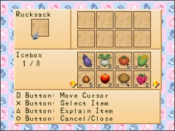

COZINHAR Quando você compra a primeira expansão da casa em Harvest Moon: Back to Nature você pode usar sua nova cozinha para cozinhar varias receitas. Para cada 8(oito) receitas diferentes que você cozinha você adcionará 1% a sua porcentagem da fazenda e há um total de 64 receitas neste jogo.  Depois de você ter sua cozinha você pode comprar os utensilhos de cozinha aos sábados assistindo o programa inteiro no Canal de Compras(Shopping Network). Depois de assistir o programa siga para a Hospedaria(INN) e você pode usar o telefone próximo a Doug para fazer um pedido. Os utensilos serão entregues na próxima terça (ou quarta se terça é um festival ou outra coisa). A ordem no qual você compra os utensilhos é a seguinte: Faca(Knife 3.000g), Frigideira(Frying Pan 2.500g), Panela(Pot 2.000g), Liquidificador(Mixer 2.500), Batedeira(Whisk 5.000g), Rolo para massas(Rolling Pin 1.500g), Forno(Oven 5.000g), e finalmente o Conjunto de Temperos(Seasoning Set 5.000g). Você tem que comprar os utensilhos um de cada vez toda semana até você ter todos eles. O Último que você compra é a Prateleira para Temperos(Spice Rack) no qual conterá uma quantidade ilimitada de temperos necessário para muitas receitas neste videogame. Você pode escutar novas receitas sendo bons amigos com os aldeões ou assistindo o programa a "Hora Deliciosa/Delicious Hour" nas terças ou no ano novo no começo da primavera. Eles não serão gravados no seu livro de receita até que você cozinhe eles . Você não precisa ter a receita de um aldeão. Você pode apenas tirar desta lista e cozinhar todas elas você mesmo. Há certos ingredientes e utensilhos que você deve usar em cada receita neste videogame. Há também um tonelada de ingredientes opcionais e utensilhos que você pode usar no qual supostamente pode fazer qualquer coisa que você cozinhe um "bom gosto" no qual quer dizer que restaurará mais stamina quando você come-lo. Eu não acho que isso faz o personagem gostar mais se você der pra eles como presente. Se você falhar em cozinhar algo neste jogo você terminará como "Fiasco de Comida/Food Fiasco". RECEITAS PERDIDAS Certifique-se de guardar pelo menos uma pedrae quando você estiver limpando seu campo no começo do jogo.Não há outro modo de conseguir essas pedras se você quebrar todas elas e você precisa de uma para a receita de Batatas Torradas(Roasted Potatoes). Você também precisa certificar-se de ter ao menos 2(dois) chocolates de algumas garotas na Ação de Graças por que quando você se casa nenhuma garota dará a você chocolate durante este festival de novo. Você só pode ter chocolate de uma garota que gosta de você em uma quantidade decente(Roxo ou coração Azul) no Dia de Ação de Graças. Se a garota gosta muito de você(Verde até coração Rosa) ela dará a você bolo de chocolate no lugar de chocolate no qual não é útil para receitas. Você precisa de chocolate para fazer bolo de chocolate e biscoitos de chocolate. LISTA DE RECEITA Se você quiser informação sobre uma receita especifica neste jogo você pode pular usando esta conveniente lista alfabetizada(Em Inglês). Apple Jam(Geleia de Maçã) Apple Pie(Torta de Maçã) Bamboo Rice(Arroz de Bambu Boiled Egg(Ovo Cozido) Butter)(Manteiga) Cake(Bolo) Cheese Fondue(Fondue de Queijo) Cheesecake(Bolo de Queijo(Cheese)) Chirashi Sushi Chocolate Cake(Bolo de Chocolate) Chocolate Cookie(Biscoito de Chocolate) Cookie(Biscoito) Curry Curry Noodles(Macarrão de Curry) Dinner Roll(Pão Francês)) Fried Noodles(Macarrão Frito) Fried Rice(Arroz Frito) Fries(Batata Frita) Fruit Juice(Suco de Fruta) Fruit Latte(Latte de Frutas) Geléia de Uva(Grape Jam) Greens(Verduras) Grilled Fish(Peixe Grelhado) Happy Eggplant(Berinjela Feliz) Grilled Fish(Peixe Grelhado) Happy Eggplant(Berinjela Feliz) Hot Milk(Leite Quente) Ice Cream(Sorvete) Jam Bun(Pão com Geléia) Ketchup Mayonnaise Small(Maionese Pequena) Mayonnaise Medium(Maionese Média) Mayonnaise Large(Maionese Grande Mayonnaise X-Large(Maionese Extra-Grande) Miso Soup(Sopa de missô) Mixed Juice(Suco Misto) Mixed Latte(Latte Misto) Mushroom Rice(Arroz de Cogumelo) Noodles(Macarrão) Omelet(Omelete) Pickled Turnips(Nabos em Picles) Pickles(Picles) Pizza Popcorn(Pipoca) Pumpkin Pudding(Pudim de Abobora) Raisin Bread(Pão de Passas) Relaxation Tea(Chá Relaxante) Rice Omelet(Omelete de Arroz) Roasted Potatoes(Batatas Torradas) Salad(Salada) Sandwich Sashimi Scrambled Eggs(Ovos Mexidos) Stew(Ensopado) Stir Fry(Fritada) Strawberry Jam (Geléia de Morango) Strawberry Milk (Leite de Morango) Sushi Sweet Potato(Batata Doce)(dish)(Batata Doce(Prato)) Tempura Tempura Noodles(Tempurá com Macarrão) Tomato Juice(Suco de Tomate) Rice Truffle(Arroz de Trufa) Vegetable Juice(Suco de Vegetais) Veggie Latte(Latte Vegetariano) Veggie Pancake(Panqueca Vegetariana) Geléia de Maçã(Apple Jam) Origem: Louis Stamina Restaurada: 5 até 9 Utensílios Necessários: Panela(Pot) Ingredientes Necessários: Maçã(Apple) ou SUGDW Maçã(Apple) Temperos Necessários: Açucar(Sugar) Utensílios Opcionais: – Ingredientes Opcionais: Mel(Honey) ou Vinho(Wine) Temperos Opcionais: – Torta de Maçã(Apple Pie) Origem: ? Stamina Restaurada: 50 até 54 Utensílios Necessários: Faca(Knife), Forno(Oven), Panela(Pot) e Rolo para Massas(Rolling Pin) Ingredientes Necessários: Maçã(Apple), Manteiga(Butter), Ovo(Egg) e Farinha(Flour) Temperos Necessários: Açucar(Sugar) Utensílios Opcionais: – Ingredientes Opcionais: Vinho(Wine) ou Mel(Honey) Temperos Opcionais: – Arroz de Bambu(Bamboo Rice) Origem: ? Stamina Restaurada: 30 até 35 Utensílios Necessários: – Ingredientes Necessários: Broto de Bambu(Bamboo Shoot) e Bolinho de Arroz(Rice Ball) Temperos Necessários: – Utensílios Opcionais: Faca(Knife) Ingredientes Opcionais: – Temperos Opcionais: Sal(Salt) ou Molho de Soja(Soy Sauce) Ovo Cozido(Boiled Egg) Origem: A Hora Deliciosa Stamina Restaurada: 20 até 23 Utensílios Necessários: Panela(Pot) Ingredientes Necessários: Ovo(Egg) Temperos Necessários: – Utensílios Opcionais: – Ingredientes Opcionais: – Temperos Opcionais: Sal(Salt) Manteiga(Butter) Origem: ? Stamina Restaurada: 1 Utensílios Necessários: Liquidificador(Mixer) Ingredientes Necessários: Leite (Qualquer tamanho)(Leite(Milk) (any size)) Temperos Necessários: – Utensílios Opcionais: – Ingredientes Opcionais: – Temperos Opcionais: – Bolo(Cake) Origem: ? Stamina Restaurada: 40 até 63 Utensílios Necessários: Forno(Oven) e Batedor(Whisk) Ingredientes Necessários: Manteiga(Butter), Ovo(Egg) e Farinha(Flour) Temperos Necessários: Açucar(Sugar) Utensílios Opcionais: Faca(Knife) Ingredientes Opcionais: Maçã(Apple), Mel(Honey), Abacaxi(Pineapple), Morango(Strawberry) ou Uva Silvestre(Wild Grape) Temperos Opcionais: – Fundue de Queijo(Cheese Fundue) Origem: Doug Stamina Restaurada: 43 até 53 Utensílios Necessários: Panela(Pot) Ingredientes Necessários: Pão(Bread) e Queijo(Cheese) Temperos Necessários: – Utensílios Opcionais: Faca(Knife) Ingredientes Opcionais: Vinho(Wine) Temperos Opcionais: Sal(Salt) Bolo de Queijo(Cheesecake) Origem: ? Stamina Restaurada: 50 até 52 Utensílios Necessários: Forno(Oven), Panela(Pot) e Batedor(Whisk) Ingredientes Necessários: Queijo(Cheese), Ovo(Egg) e Leite(Milk) Temperos Necessários: Açucar(Sugar) Utensílios Opcionais: – Ingredientes Opcionais: Mel(Honey) Temperos Opcionais: – Chirashi Sushi Origem: ? Stamina Restaurada: 50 até 55 Utensílios Necessários: Faca(Knife) Ingredientes Necessários: Bolinho de Arroz(Rice Ball), Sashimi e Ovos Mexidos(Scrambled Eggs) Temperos Necessários: Vinagre(Vinegar) Utensílios Opcionais: – Ingredientes Opcionais: Pepino(Cucumber) Temperos Opcionais: Molho de Soja(Soy Sauce) Bolo de Chocolate(Chocolate Cake) Origem: ? Stamina Restaurada: 70 até 91 Utensílios Necessários: Forno(Oven) e Batedor(Whisk) Ingredientes Necessários: Manteiga(Butter), Chocolate, Ovo(Egg) e Farinha(Flour) Temperos Necessários: Açucar(Sugar) Utensílios Opcionais: Faca(Knife) Ingredientes Opcionais: Maçã(Apple), Mel(Honey), Abacaxi(Pineapple), Morango(Strawberry) ou Uva Silvestre(Wild Grape) Temperos Opcionais: – Biscoito de Chocolate(Chocolate Cookie) Origem: Sasha Stamina Restaurada: 30 até 32 Utensílios Necessários: Forno(Oven) e Rolo para Massas(Rolling Pin) Ingredientes Necessários: Manteiga(Butter), Chocolate, Ovo(Egg) e Farinha(Flour) Temperos Necessários: Açucar(Sugar) Utensílios Opcionais: – Ingredientes Opcionais: Mel(Honey) Temperos Opcionais: – Biscoito(Cookie) Origem: A Hora Deliciosa Stamina Restaurada: 15 até 17 Utensílios Necessários: Forno(Oven) e Rolo para Massas(Rolling Pin) Ingredientes Necessários: Manteiga(Butter), Ovo(Egg) e Farinha(Flour) Temperos Necessários: Açucar(Sugar) Utensílios Opcionais: – Ingredientes Opcionais: Mel(Honey) Temperos Opcionais: – Curry Origem: A Hora Deliciosa Stamina Restaurada: 30 até 65 Utensílios Necessários: Panela(Pot) Ingredientes Necessários: Curry em Pó(Curry Powder) e Bolinho de Arroz(Rice Ball) Temperos Necessários: – Utensílios Opcionais: Faca(Knife) Ingredientes Opcionais: Broto de Bambu(Bamboo Shoot), Ovo Cozido(Boiled Egg), Queijo(Cheese), Chocolate, Milho(Corn), Ovo(Egg), Peixe (Qualquer tamanho)(Peixe(Fish)(any size)), Suco de Uva(Grape Juice), Pimenta Verde(Green Pepper), Cogumelo(Mushroom), Óleo(Oil), Abobora(Pumpkin), Espinafre(Spinach), Batata Doce(Sweet Potato), Tomate(Tomato), Trufa(Truffle), Nabo(Turnip), Suco de Vegetais(Vegetable Juice), Uva Silvestre(Wild Grape) ou Vinho(Wine) Temperos Opcionais: Sal(Salt), Molho de Soja(Soy Sauce) ou Açucar(Sugar) Macarrão com Curry(Curry Noodles) Origem: ? Stamina Restaurada: 60 até 80 Utensílios Necessários: Faca(Knife), Panela(Pot) e Rolo para Massas(Rolling Pin) Ingredientes Necessários: Curry em Pó(Curry Powder) e Farinha(Flour) ou Curry em Pó(Curry Powder) e Macarrão Temperos Necessários: – Utensílios Opcionais: – Ingredientes Opcionais: Broto de Bambu(Bamboo Shoot), Repolho(Cabbage), Cenoura, Ovo(Egg), Berinjela(Eggplant), Peixe (Qualquer tamanho)(Peixe(Fish)(any size), Pimenta Verde(Green Pepper), Cogumelo(Mushroom), Cebola(Onion), Batata Doce(Sweet Potato), Nabo(Turnip) e Trufa(Truffle) Temperos Opcionais: Pasta de Miso(Miso Paste), Sal(Salt), Molho de Soja(Soy Sauce) e Açucar(Sugar) Pão Francês(Dinner Roll) Origem: ? Stamina Restaurada: 30 até 32 Utensílios Necessários: – Ingredientes Necessários: Pão(Bread) e Manteiga(Butter) Temperos Necessários: – Utensílios Opcionais: – Ingredientes Opcionais: Mel(Honey) Temperos Opcionais: – Macarrão Frito(Fried Noodles) Origem: Zack Stamina Restaurada: 60 Utensílios Necessários: Frigideira(Frying Pan) Ingredientes Necessários: Macarrão(Noodles) e Óleo(Oil) Temperos Necessários: – Utensílios Opcionais: – Ingredientes Opcionais: – Temperos Opcionais: – Arroz Frito(Fried Rice) Origem: Harris Stamina Restaurada: 49 até 69 Utensílios Necessários: Frigideira(Frying Pan) Ingredientes Necessários: Ovo(Egg), Óleo(Oil) e Bolinho de Arroz(Rice Ball) Temperos Necessários: Sal(Salt), Molho de Soja(Soy Sauce) e Açucar(Sugar) Utensílios Opcionais: Faca(Knife) Ingredientes Opcionais: Broto de Bambu(Bamboo Shoot), Ovo Cozido(Boiled Egg), Repolho(Cabbage), Cenoura, Milho(Corn), Pepino(Cucumber), Peixe (Qualquer tamanho)(Peixe(Fish)(any size), Pimenta Verde(Green Pepper), Peixe Grelhado(Grilled Peixe(Fish)), Cogumelo(Mushroom), Cebola(Onion), Sashimi, Ovos Mexidos(Scrambled Eggs), Espinafre(Spinach), Fritada(Stir Fry), Trufa(Truffle), e Vinho(Wine) Temperos Opcionais: – Batata Frita(Fries) Origem: Pesque na praia, eventualmente você pegará esta receita Stamina Restaurada: 30 até 40 Utensílios Necessários: Frigideira(Frying Pan) e Faca(Knife) Ingredientes Necessários: Óleo(Oil) e Batata(Potato) Temperos Necessários: – Utensílios Opcionais: – Ingredientes Opcionais: Ketchup Temperos Opcionais: Sal(Salt) Suco de Fruta(Fruit Juice) Origem: ? Stamina Restaurada: 29 até 33 Utensílios Necessários: Liquidificador(Mixer) Ingredientes Necessários: Ao menos um(a) Maçã(Apple), Abacaxi(Pineapple), Morango(Strawberry) ou Uva Silvestre(Wild Grape) Temperos Necessários: – Utensílios Opcionais: Faca(Knife) Ingredientes Opcionais: Mel(Honey) Temperos Opcionais: Açucar(Sugar) Latte de Frutas(Fruit Latte) Origem: Basil Stamina Restaurada: 39 até 43 Utensílios Necessários: Liquidificador(Mixer) Ingredientes Necessários: Ao menos um(a) Maçã(Apple), Abacaxi(Pineapple), Morango(Strawberry) ou Wild Grap e Leite(Milk) ou Fruit Juice e Leite(Milk) Temperos Necessários: – Utensílios Opcionais: Faca(Knife) Ingredientes Opcionais: Mel(Honey) Temperos Opcionais: Açucar(Sugar) Geléia de Uva(Grape Jam) Origem: A Hora Deliciosa Stamina Restaurada: 5 até 9 Utensílios Necessários: Panela(Pot) Ingredientes Necessários: Uvas Silvestres(Wild Grapes) Temperos Necessários: Açucar(Sugar) Utensílios Opcionais: – Ingredientes Opcionais: Mel(Honey) ou Vinho(Wine) Temperos Opcionais: Sal(Salt) Verduras(Greens) Origem: Manna Stamina Restaurada: 20 Utensílios Necessários: Panela(Pot) Ingredientes Necessários: Espinafre(Spinach) Temperos Necessários: Molho de Soja(Soy Sauce) Utensílios Opcionais: – Ingredientes Opcionais: – Temperos Opcionais: – Peixe Grelhado(Grilled Fish) Origem: New Years Special TV (Spring 3) ou A Hora Deliciosa Stamina Restaurada: 30 até 36 Utensílios Necessários: Frigideira(Frying Pan) Ingredientes Necessários: Medium Peixe(Fish) Temperos Necessários: – Utensílios Opcionais: – Ingredientes Opcionais: – Temperos Opcionais: Sal(Salt) ou Molho de Soja(Soy Sauce) Berinjela Feliz(Happy Eggplant) Origem: A Hora Deliciosa Stamina Restaurada: 30 Utensílios Necessários: Frigideira(Frying Pan) Ingredientes Necessários: Berinjela(Eggplant) Temperos Necessários: Pasta de Miso(Miso Paste), Açucar(Sugar) e Molho de Soja(Soy Sauce) Utensílios Opcionais: – Ingredientes Opcionais: – Temperos Opcionais: – Leite Quente(Hot Milk) Origem: A Hora Deliciosa Stamina Restaurada: 20 até 24 Utensílios Necessários: Panela(Pot) Ingredientes Necessários: Leite (Qualquer tamanho)(Leite(Milk) (any size)) Temperos Necessários: – Utensílios Opcionais: – Ingredientes Opcionais: – Temperos Opcionais: Açucar(Sugar) Sorvete(Ice Cream) Origem: Barley Stamina Restaurada: 30 até 53 Utensílios Necessários: Panela(Pot) e Batedor(Whisk) Ingredientes Necessários: Ovo(Egg) e Leite(Milk) Temperos Necessários: Açucar(Sugar) Utensílios Opcionais: Faca(Knife) Ingredientes Opcionais: Maçã(Apple), Abacaxi(Pineapple), Morango(Strawberry) ou Uva Silvestre(Wild Grape) Temperos Opcionais: – Pão com Geléia(Jam Bun) Origem: Especial de TV de Ano Novo(Primavera 5) Stamina Restaurada: 40 até 50 Utensílios Necessários: – Ingredientes Necessários: Pão(Bread) e também Geléia de Maçã(Apple Geléia), Geléia de Uva(Grape Geléia) ou Morango(Strawberry) Geléia (você pode usar mais de um tipo de Geléia) Temperos Necessários: – Utensílios Opcionais: – Ingredientes Opcionais: – Temperos Opcionais: – Ketchup Origem: Você pode cavar esta receita na Mina de Inverno Stamina Restaurada: 1 Utensílios Necessários: Liquidificador(Mixer) Ingredientes Necessários: Tomate(Tomato) e Cebola(Onion) Temperos Necessários: Sal(Salt), Açucar(Sugar) e Vinagre(Vinegar) Utensílios Opcionais: – Ingredientes Opcionais: – Temperos Opcionais: – Maionese Pequena(Mayonnaise Small) Origem: ? Stamina Restaurada: 1 Utensílios Necessários: Batedor(Whisk) Ingredientes Necessários: Ovo(Egg) Normal (De uma galinha com pouco coração) e Óleo(Oil) Temperos Necessários: Vinagre(Vinegar) Utensílios Opcionais: – Ingredientes Opcionais: – Temperos Opcionais: – Maionese Média(Mayonnaise Medium) Origem: ? Stamina Restaurada: 2 Utensílios Necessários: Batedor(Whisk) Ingredientes Necessários: Ovo(Egg) Bom (De uma galinha com um nível de coração decente) e Óleo(Oil) Temperos Necessários: Vinagre(Vinegar) Utensílios Opcionais: – Ingredientes Opcionais: – Temperos Opcionais: – Maionese Grande(Mayonnaise Large) Origem: ? Stamina Restaurada: 3 Utensílios Necessários: Batedor(Whisk) Ingredientes Necessários: Ovo(Egg) Excelente (De uma galinha com muitos corações) e Óleo(Oil) Temperos Necessários: Vinagre(Vinegar) Utensílios Opcionais: – Ingredientes Opcionais: – Temperos Opcionais: – Maionese Extra Grande(Mayonnaise Extra Large) Origem: ? Stamina Restaurada: 4 Utensílios Necessários: Batedor(Whisk) Ingredientes Necessários: Ovo de Ouro(Gold Egg) e Óleo(Oil) Temperos Necessários: Vinagre(Vinegar) Utensílios Opcionais: – Ingredientes Opcionais: – Temperos Opcionais: – Sopa de missô(Miso Soup) Origem: A Hora Deliciosa Stamina Restaurada: 10 até 52 Utensílios Necessários: Panela(Pot) Ingredientes Necessários: Ao menos um(a): Broto de Bambu(Bamboo Shoot), Repolho(Cabbage), Cenoura, Milho(Corn), Berinjela(Eggplant), Pimenta Verde(Green Pepper), Cogumelo(Mushroom), Cebola(Onion), Batata(Potato), Abobora(Pumpkin), Peixe Pequeno(Small Peixe(Fish)), Espinafre(Spinach), Batata Doce(Sweet Potato) e/ou Nabo(Turnip) Temperos Necessários: Pasta de Miso(Miso Paste) Utensílios Opcionais: Faca(Knife) Ingredientes Opcionais: – Temperos Opcionais: Sal(Salt) ou Molho de Soja(Soy Sauce) Suco Misto(Mixed Juice) Origem: Dooutor Tim Stamina Restaurada: 50 até 58 Utensílios Necessários: Liquidificador(Mixer) Ingredientes Necessários: Ao menos um(a) Maçã(Apple), Abacaxi(Pineapple), Morango(Strawberry) ou Uva Silvestre(Wild Grape) e Ao menos um(a) Repolho(Cabbage), Cenoura ou Pepino(Cucumber) alternativamente você pode usar Suco de Fruta e Suco de Vegetais(Vegetable Juice). Temperos Necessários: – Utensílios Opcionais: Faca(Knife) Ingredientes Opcionais: Broto de Bambu(Bamboo Shoot), Milho(Corn), Pepino(Cucumber), Berinjela(Eggplant), Suco de Uva(Grape Juice), Pimenta Verde(Green Pepper), Cogumelo(Mushroom), Cebola(Onion), Espinafre(Spinach), Tomate(Tomato), Trufa(Truffle) e Nabo(Turnip) Temperos Opcionais: Sal(Salt) ou Açucar(Sugar) Latte Misto(Mixed Latte) Origem: ? Stamina Restaurada: 60 até 65 Utensílios Necessários: Liquidificador(Mixer) Ingredientes Necessários: Um(a) Maçã(Apple), Abacaxi(Pineapple), Morango(Strawberry) ou Uvas Silvestres(Wild Grapes), Um(a) Repolho(Cabbage), Cenoura ou Pepino(Cucumber) e Leite(Milk) alternativamente você pode usar Suco Misto(Mixed Juice) e Leite(Milk) Temperos Necessários: – Utensílios Opcionais: Faca(Knife) Ingredientes Opcionais: – Temperos Opcionais: Sal(Salt) ou Açucar(Sugar) Arroz de Cogumelo(Mushroom Rice) Origem: A Hora Deliciosa Stamina Restaurada: 30 até 35 Utensílios Necessários: – Ingredientes Necessários: Cogumelo(Mushroom) e Bolinho de Arroz(Rice Ball) Temperos Necessários: – Utensílios Opcionais: Faca(Knife) Ingredientes Opcionais: – Temperos Opcionais: Sal(Salt) ou Molho de Soja(Soy Sauce) Macarrão(Noodles) Origem: A Hora Deliciosa Stamina Restaurada: 40 até 76 Utensílios Necessários: Faca(Knife), Panela(Pot) e Rolo para Massas(Rolling Pin) Ingredientes Necessários: Farinha(Flour) Temperos Necessários: – Utensílios Opcionais: – Ingredientes Opcionais: Broto de Bambu(Bamboo Shoot), Repolho(Cabbage), Cenoura, Ovo(Egg), Berinjela(Eggplant), Peixe (Qualquer tamanho)(Peixe(Fish)(any size), Pimenta Verde(Green Pepper), Cogumelo(Mushroom), Cebola(Onion), Batata Doce(Sweet Potato), Trufa(Truffle) ou Nabo(Turnip) Temperos Opcionais: Sal(Salt), Molho de Soja(Soy Sauce) ou Açucar(Sugar) Omelete(Omelet) Origem: A Hora Deliciosa Stamina Restaurada: 50 até 82 Utensílios Necessários: Frigideira(Frying Pan) Ingredientes Necessários: Ovo(Egg), Leite(Milk) e Óleo(Oil) Temperos Necessários: – Utensílios Opcionais: Batedor(Whisk) Ingredientes Opcionais: Broto de Bambu(Bamboo Shoot), Repolho(Cabbage), Cenoura, Queijo(Cheese), Milho(Corn), Berinjela(Eggplant), Peixe (Qualquer tamanho)(Peixe(Fish)(any size), Pimenta Verde(Green Pepper), Ketchup, Maionese(Mayonnaise), Cebola(Onion), Batata(Potato), Abobora(Pumpkin), Batata Doce(Sweet Potato), Trufa(Truffle) Temperos Opcionais: Sal(Salt) Nabos com Picles(Pickled Turnips) Origem: Saibara Stamina Restaurada: 20 até 23 Utensílios Necessários: Faca(Knife) Ingredientes Necessários: Nabo(Turnip) Temperos Necessários: Vinagre(Vinegar) Utensílios Opcionais: – Ingredientes Opcionais: – Temperos Opcionais: Sal(Salt) ou Molho de Soja(Soy Sauce) Picles(Pickles) Origem: ? Stamina Restaurada: 20 até 23 Utensílios Necessários: – Ingredientes Necessários: Pepino(Cucumber) Temperos Necessários: Sal(Salt) Utensílios Opcionais: Faca(Knife) Ingredientes Opcionais: – Temperos Opcionais: – Pizza Origem: ? Stamina Restaurada: 43 até 67 Utensílios Necessários: Forno(Oven) e Rolo para Massas(Rolling Pin) Ingredientes Necessários: Queijo(Cheese), Farinha(Flour) e Ketchup Temperos Necessários: – Utensílios Opcionais: Faca(Knife) Ingredientes Opcionais: Broto de Bambu(Bamboo Shoot), Cenoura, Milho(Corn), Ovo(Egg), Berinjela(Eggplant), Pimenta Verde(Green Pepper), Maionese(Mayonnaise), Cogumelo(Mushroom), Cebola(Onion), Abacaxi(Pineapple), Batata(Potato), Abobora(Pumpkin), Batata Doce(Sweet Potato), Tomate(Tomato) ou Trufa(Truffle) Temperos Opcionais: Sal(Salt) ou Açucar(Sugar) Pipoca(Popcorn) Origem: Kai Stamina Restaurada: 30 até 35 Utensílios Necessários: Frigideira(Frying Pan) Ingredientes Necessários: Milho(Corn) Temperos Necessários: – Utensílios Opcionais: – Ingredientes Opcionais: Manteiga(Butter) Temperos Opcionais: – Pudim de Abóbora(Pumpkin Pudding) Origem: ? Stamina Restaurada: 50 até 52 Utensílios Necessários: Forno(Oven) e Panela(Pot) Ingredientes Necessários: Ovo(Egg), Leite(Milk) e Abobora(Pumpkin) Temperos Necessários: Açucar(Sugar) Utensílios Opcionais: – Ingredientes Opcionais: Mel(Honey) ou Vinho(Wine) Temperos Opcionais: – Pão de Passas(Raisin Bread) Origem: ? Stamina Restaurada: 30 Utensílios Necessários: – Ingredientes Necessários: Pão(Bread) e Uvas Silvestres(Wild Grapes) Temperos Necessários: – Utensílios Opcionais: – Ingredientes Opcionais: – Temperos Opcionais: – Chá Relaxante(Relaxation Tea) Origem: ? Stamina Restaurada: 70 até 112 Utensílios Necessários: Panela(Pot) Ingredientes Necessários: Folhas de Chá Relaxante Temperos Necessários: – Utensílios Opcionais: Faca(Knife) Ingredientes Opcionais: Maçã(Apple), Erva Verde(Green Grass)(Blue Grass), Erva Verde, Mel(Honey), Leite(Milk), Fruta de Laranja(Orangecup Fruit), Abacaxi(Pineapple), Erva Vermelha(Red Grass), Uva Silvestre(Wild Grape) ou Vinho(Wine) Temperos Opcionais: Açucar(Sugar) Omelete de Arroz(Rice Omelet) Origem: A Hora Deliciosa Stamina Restaurada: 60 até 82 Utensílios Necessários: Frigideira(Frying Pan) Ingredientes Necessários: Ovo(Egg), Leite(Milk), Óleo(Oil) e Bolinho de Arroz(Rice Ball) Temperos Necessários: – Utensílios Opcionais: Batedor(Whisk) Ingredientes Opcionais: Broto de Bambu(Bamboo Shoot), Repolho(Cabbage), Cenoura, Queijo(Cheese), Milho(Corn), Berinjela(Eggplant), Peixe (Qualquer tamanho)(Peixe(Fish)(any size), Pimenta Verde(Green Pepper), Ketchup, Maionese(Mayonnaise), Cogumelo(Mushroom), Cebola(Onion), Batata(Potato), Abobora(Pumpkin), Espinafre(Spinach), Batata Doce(Sweet Potato) ou Trufa(Truffle) Temperos Opcionais: Sal(Salt), Molho de Soja(Soy Sauce) ou Açucar(Sugar) Batatas Torradas(Roasted Potatoes) Origem: A Hora Deliciosa Stamina Restaurada: 40 até 42 Utensílios Necessários: Forno(Oven) Ingredientes Necessários: Pedra Pequena e Batata Doce(Sweet Potato) Temperos Necessários: – Utensílios Opcionais: – Ingredientes Opcionais: – Temperos Opcionais: Sal(Salt) ou Açucar(Sugar) Salada(Salad) Origem: A Hora Deliciosa Stamina Restaurada: 34 até 60 Utensílios Necessários: Faca(Knife) Ingredientes Necessários: Repolho(Cabbage), Cenoura, Pepino(Cucumber) e Tomate(Tomato) Temperos Necessários: – Utensílios Opcionais: – Ingredientes Opcionais: Maçã(Apple), Ovo Cozido(Boiled Egg), Queijo(Cheese), Milho(Corn), Pimenta Verde(Green Pepper), Maionese(Mayonnaise), Cogumelo(Mushroom), Óleo(Oil), Abacaxi(Pineapple), Batata(Potato), Morango(Strawberry), Trufa(Truffle) e Nabo(Turnip) Temperos Opcionais: Sal(Salt) ou Vinagre(Vinegar) Sandwich Origem: Ellen Stamina Restaurada: 46 até 68 Utensílios Necessários: Faca(Knife) Ingredientes Necessários: Pão(Bread), Pepino(Cucumber) e Tomate(Tomato) Temperos Necessários: – Utensílios Opcionais: – Ingredientes Opcionais: Maçã(Apple), Ovo Cozido(Boiled Egg), Manteiga(Butter), Cababge, Cenoura, Queijo(Cheese), Milho(Corn), Pepino(Cucumber), Peixe (Qualquer tamanho)(Peixe(Fish)(any size), Mel(Honey), Maionese(Mayonnaise), Cogumelo(Mushroom), Cebola(Onion), Abacaxi(Pineapple), Batata(Potato), Morango(Strawberry), Batata Doce(Sweet Potato), Tomate(Tomato), Trufa(Truffle), Uva Silvestre(Wild Grape) ou Vinho(Wine) Temperos Opcionais: Sal(Salt) Sashimi Origem: Greg Stamina Restaurada: 30 até 38 Utensílios Necessários: Faca(Knife) Ingredientes Necessários: Large Peixe(Fish) e/ou Medium Peixe(Fish) Temperos Necessários: – Utensílios Opcionais: – Ingredientes Opcionais: – Temperos Opcionais: Molho de Soja(Soy Sauce) Ovos Mexidos(Scrambled Eggs) Origem: Lillia Stamina Restaurada: 40 até 58 Utensílios Necessários: Frigideira(Frying Pan) Ingredientes Necessários: Ovo(Egg) e Óleo(Oil) Temperos Necessários: – Utensílios Opcionais: Batedor(Whisk) Ingredientes Opcionais: Manteiga(Butter) ou Maionese(Mayonnaise) Temperos Opcionais: Sal(Salt), Molho de Soja(Soy Sauce) ou Açucar(Sugar) Bobó(Stew) Origem: ? Stamina Restaurada: 35 até 58 Utensílios Necessários: Panela(Pot) Ingredientes Necessários: Farinha(Flour) e Leite(Milk) Temperos Necessários: Sal(Salt) Utensílios Opcionais: Faca(Knife) Ingredientes Opcionais: Maçã(Apple), Broto de Bambu(Bamboo Shoot), Chocolate, Peixe(Fish), Suco de Uva(Grape Juice), Pimenta Verde(Green Pepper), Mel(Honey), Óleo(Oil), Abacaxi(Pineapple), Spa-Ovo Cozido(Boiled Egg), Espinafre(Spinach), Batata Doce(Sweet Potato), Tomate(Tomato), Nabo(Turnip), Suco de Vegetais(Vegetable Juice), Uva Silvestre(Wild Grape) ou Vinho(Wine) Temperos Opcionais: – Fritada(Stir Fry) Origem: A Hora Deliciosa Stamina Restaurada: 40 até 52 Utensílios Necessários: Frigideira(Frying Pan) e Faca(Knife) Ingredientes Necessários: Repolho(Cabbage) e Óleo(Oil) Temperos Necessários: Molho de Soja(Soy Sauce) Utensílios Opcionais: – Ingredientes Opcionais: Broto de Bambu(Bamboo Shoot), Cenoura, Milho(Corn), Pepino(Cucumber), Berinjela(Eggplant), Pimenta Verde(Green Pepper), Cogumelo(Mushroom), Cebola(Onion), Batata(Potato), Espinafre(Spinach), Batata Doce(Sweet Potato), Tomate(Tomato), Trufa(Truffle) ou Nabo(Turnip) Temperos Opcionais: – Geléia de Morango(Strawberry Jam) Origem: Especial de TV de Ano Novo(5 de Primavera) Stamina Restaurada: 5 Utensílios Necessários: Panela(Pot) Ingredientes Necessários: Morango(Strawberry) Temperos Necessários: Açucar(Sugar) Utensílios Opcionais: – Ingredientes Opcionais: – Temperos Opcionais: – Leite de Morango(Strawberry Milk) Origem: Pastor Carter Stamina Restaurada: 30 até 36 Utensílios Necessários: Liquidificador(Mixer) Ingredientes Necessários: Leite(Milk) e Morango(Strawberry) Temperos Necessários: – Utensílios Opcionais: – Ingredientes Opcionais: Mel(Honey) Temperos Opcionais: Sal(Salt) ou Açucar(Sugar) Sushi Origem: ? Stamina Restaurada: 40 até 41 Utensílios Necessários: – Ingredientes Necessários: Bolinho de Arroz(Rice Ball) e Sashimi Temperos Necessários: Vinagre(Vinegar) Utensílios Opcionais: – Ingredientes Opcionais: – Temperos Opcionais: Molho de Soja(Soy Sauce) Batata Doce(Sweet Potato) (prato) Origem: Chef (O Duende Vermelho da Colheita) Stamina Restaurada: 40 Utensílios Necessários: Forno(Oven) e Panela(Pot) Ingredientes Necessários: Manteiga(Butter), Ovo(Egg) e Batata Doce(Sweet Potato) Temperos Necessários: Açucar(Sugar) Utensílios Opcionais: – Ingredientes Opcionais: – Temperos Opcionais: – Tempurá(Tempura) Origem: ? Stamina Restaurada: 20 até 38 Utensílios Necessários: Frigideira(Frying Pan) Ingredientes Necessários: Ovo(Egg), Farinha(Flour) e Óleo(Oil) Temperos Necessários: – Utensílios Opcionais: Batedor(Whisk) Ingredientes Opcionais: Ovo Cozido(Boiled Egg), Repolho(Cabbage), Cenoura, Chocolate, Pepino(Cucumber), Berinjela(Eggplant), Peixe (Qualquer tamanho)(Peixe(Fish)(any size), Pimenta Verde(Green Pepper), Cogumelo(Mushroom), Abacaxi(Pineapple), Cogumelo Venenoso(Poisonous Mushroom), Batata(Potato), Abobora(Pumpkin), Batata Doce(Sweet Potato), Trufa(Truffle) ou Nabo(Turnip) Temperos Opcionais: – Macarrão Tempurá(Tempura Noodles) Origem: ? Stamina Restaurada: 60 até 92 Utensílios Necessários: Panela(Pot) Ingredientes Necessários: Macarrão e Tempurá Temperos Necessários: – Utensílios Opcionais: – Ingredientes Opcionais: Repolho(Cabbage), Cenoura, Ovo(Egg), Peixe(Fish), Cogumelo(Mushroom), Batata Doce(Sweet Potato), Nabo(Turnip) ou Trufa(Truffle) Temperos Opcionais: Pasta de Miso(Miso Paste), Sal(Salt), Açucar(Sugar) ou Molho de Soja(Soy Sauce) Suco de Tomate(Tomato Juice) Origem: A Hora Deliciosa Stamina Restaurada: 20 até 25 Utensílios Necessários: Liquidificador(Mixer) Ingredientes Necessários: Tomate(Tomato) Temperos Necessários: – Utensílios Opcionais: – Ingredientes Opcionais: – Temperos Opcionais: Sal(Salt) Arroz de Trufa(Truffle Rice) Origem: A Hora Deliciosa Stamina Restaurada: 60 até 65 Utensílios Necessários: – Ingredientes Necessários: Bolinho de Arroz(Rice Ball) e Trufa(Truffle) Temperos Necessários: – Utensílios Opcionais: Faca(Knife) Ingredientes Opcionais: – Temperos Opcionais: Sal(Salt) ou Molho de Soja(Soy Sauce) Suco de Vegetais(Vegetable Juice) Origem: A Hora Deliciosa Stamina Restaurada: 28 até 50 Utensílios Necessários: Liquidificador(Mixer) Ingredientes Necessários: Ao menos um(a) Repolho(Cabbage), Cenoura e Pepino(Cucumber) Temperos Necessários: – Utensílios Opcionais: Faca(Knife) Ingredientes Opcionais: Broto de Bambu(Bamboo Shoot), Milho(Corn), Queijo(Cheese), Ovo(Egg), Berinjela(Eggplant), Pimenta Verde(Green Pepper), Cebola(Onion), Espinafre(Spinach), Trufa(Truffle) ou Nabo(Turnip) Temperos Opcionais: Sal(Salt) Latte Vegetariano(Veggie Latte) Origem: ? Stamina Restaurada: 38 até 59 Utensílios Necessários: Liquidificador(Mixer) Ingredientes Necessários: Leite(Milk) e Ao menos um(a) Repolho(Cabbage), Cenoura ou Pepino(Cucumber) ou Suco de Vegetais(Vegetable Juice) e Leite(Milk) Temperos Necessários: – Utensílios Opcionais: Faca(Knife) Ingredientes Opcionais: Broto de Bambu(Bamboo Shoot), Queijo(Cheese), Milho(Corn), Ovo(Egg), Berinjela(Eggplant), Pimenta Verde(Green Pepper), Cebola(Onion), Espinafre(Spinach), Trufa(Truffle) e Nabo(Turnip) Temperos Opcionais: Sal(Salt) Panqueca Vegetariana(Veggie Pancake) Origem: Gotz Stamina Restaurada: 50 até 65 Utensílios Necessários: Frigideira(Frying Pan) e Faca(Knife) Ingredientes Necessários: Repolho(Cabbage), Ovo(Egg), Farinha(Flour) e Óleo(Oil) Temperos Necessários: – Utensílios Opcionais: – Ingredientes Opcionais: Broto de Bambu(Bamboo Shoot), Cenoura, Queijo(Cheese), Pepino(Cucumber), Berinjela(Eggplant), Peixe (Qualquer tamanho)(Peixe(Fish)(any size), Maionese(Mayonnaise), Leite(Milk), Cogumelo(Mushroom), Batata(Potato), Abobora(Pumpkin), Espinafre(Spinach) ou Trufa(Truffle) Temperos Opcionais: Sal(Salt) ou Molho de Soja(Soy Sauce) Huuuummmm... Estou sentindo um cheiro bom!